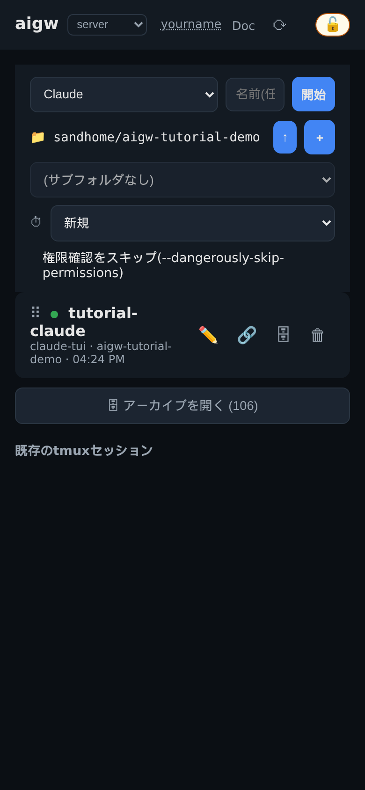
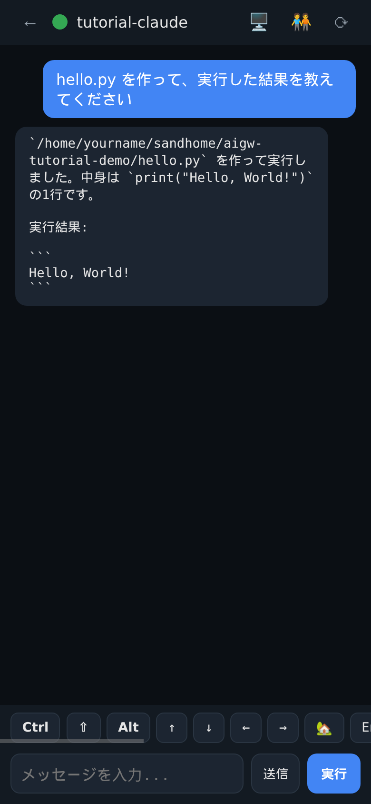
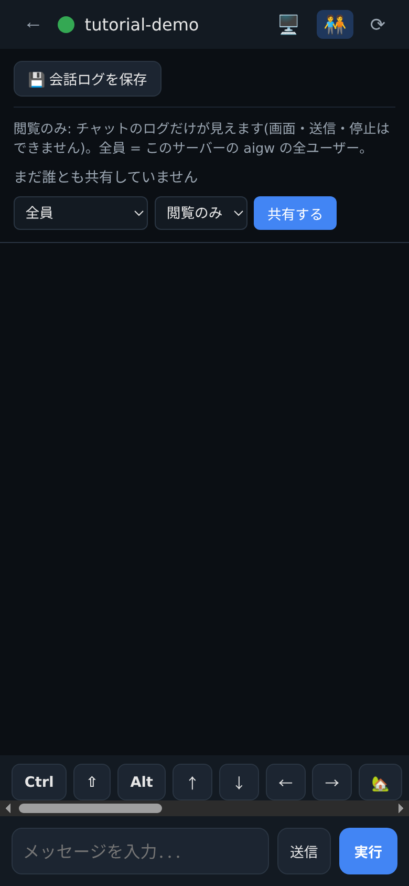
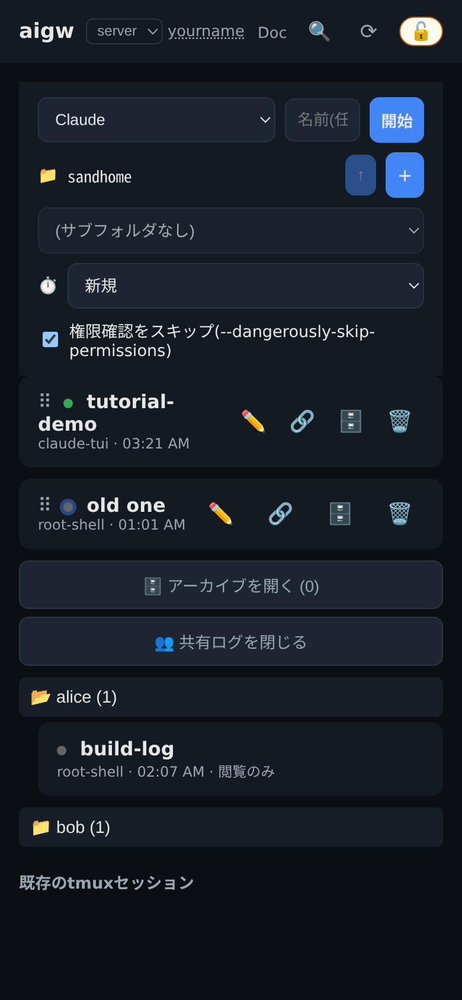
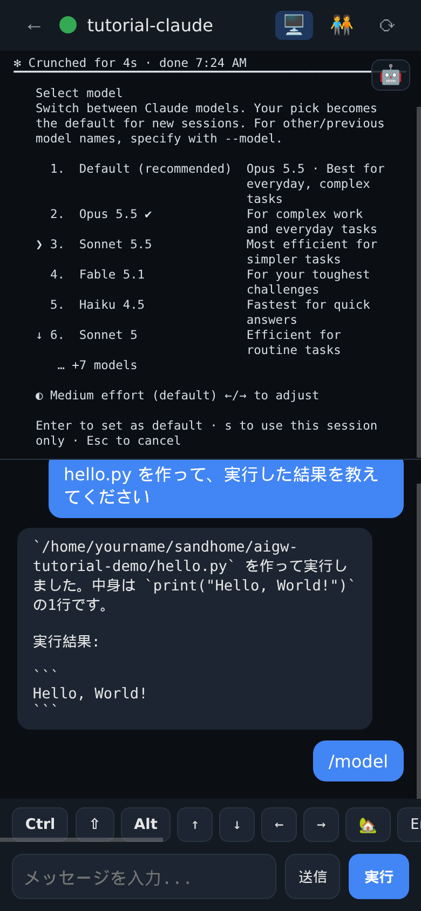
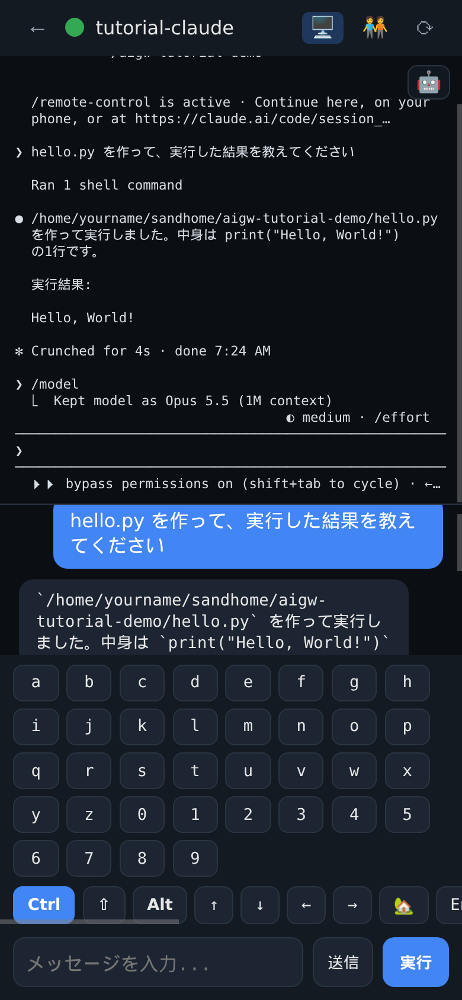
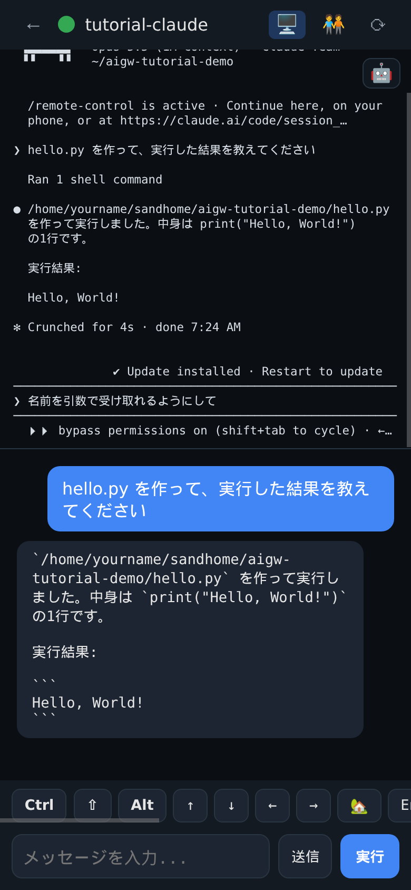

这是一份指南，介绍如何在手机或电脑的浏览器中使用服务器上的 AI 代理（Claude Code 等）。基础篇说明从创建账号到能够进行日常 AI 编程的过程。各服务器安装的功能略有不同，不清楚的地方请向管理员确认。
aigw 是在 https://<サーバー>/agents/ 打开的聊天式界面。你在聊天中写下的指令，会发送给在服务器上你专属容器中运行的 Claude Code，回复会返回到聊天中。
文件夹、巡览、通知、通行密钥、主机和 root 的 shell、其他机器等内容在进阶篇中。
如果你有管理员允许的域名下的 Google 账号，就可以在 aigw 界面上自己创建账号（仅限启用了此功能的服务器）。否则请让管理员为你创建。
https://<サーバー>/agents/，通过“使用 Google 登录”选择允许的域名下的账号。-、_。开头必须是小写英文字母或 _。最多 32 个字符。如果只用 aigw，则不需要 SSH。不过，注册用于 Email 和主机 shell 的通行密钥需要用 SSH 登录一次，所以尽早完成会比较省事。请根据你使用的电脑，按下面其中一种步骤操作。
# 在自己的电脑上：保存收到的密钥并收紧权限
mkdir -p ~/.ssh
mv ~/Downloads/id_ed25519_<ユーザー名> ~/.ssh/
chmod 600 ~/.ssh/id_ed25519_<ユーザー名>
# 首次登录。登录后会立即要求设置密码
ssh -i ~/.ssh/id_ed25519_<ユーザー名> <ユーザー名>@<サーバー>在 MSYS2 中，~ 是 MSYS2 的主目录（例：C:\msys64\home\<名前>），与 Windows 的主目录（C:\Users\<名前>）不同。下载的文件在 /c/Users/<Windowsの名前>/Downloads/ 中。放在 MSYS2 的 ~/.ssh 中的密钥，PowerShell 的 ssh 是看不到的。
Windows 10/11 自带 ssh（如果没有，请在“设置 → 系统 → 可选功能”中添加“OpenSSH 客户端”）。在 PowerShell 中执行以下命令。由于不能使用 chmod，权限用 icacls 来收紧。
# 将密钥移到 C:\Users\<Windowsの名前>\.ssh\
mkdir -Force $env:USERPROFILE\.ssh
Move-Item $env:USERPROFILE\Downloads\id_ed25519_<ユーザー名> $env:USERPROFILE\.ssh\
$key = "$env:USERPROFILE\.ssh\id_ed25519_<ユーザー名>"
# 让自己以外的人无法读取（切断继承，只允许自己读取）
icacls $key /inheritance:r
icacls $key /grant:r "$($env:USERNAME):(R)"
# 首次登录。登录后会立即要求设置密码
ssh -i $key <ユーザー名>@<サーバー>如果提示“UNPROTECTED PRIVATE KEY FILE”或“bad permissions”，请重新执行 icacls 那两行。在 PowerShell 中，-i ~/.ssh/... 里的 ~ 有时不会被展开，所以这里写成了 $env:USERPROFILE。
在这次首次登录设置密码之前，密码处于谁都无法使用的状态。从第二次起用同样的命令即可登录。
-i把以下内容写进配置文件，只需 ssh aigw 就能登录。配置文件在 Mac、Linux、MSYS2 中是 ~/.ssh/config，在 Windows 自带的 OpenSSH 中是 C:\Users\<Windowsの名前>\.ssh\config（无扩展名）。IdentityFile 中的 ~ 在两者中都会被 ssh 解释为自己的主目录。
Host aigw
HostName <サーバー>
User <ユーザー名>
IdentityFile ~/.ssh/id_ed25519_<ユーザー名>aigw-set-email you@example.com。之后就可以用该邮箱地址的 Google 账号登录了。aigw 的界面有“会话列表”和“聊天”两个。会话是指在服务器上持续运行的一个工作场所（Claude Code 或 shell）。

| 位置 | 含义 |
|---|---|
server 选择栏 | 在哪台机器上运行（如果有通过 ssh 连接的其他机器，会列在这里）。设置界面也从这里选择 |
| 用户名 | 点按即退出登录 |
Doc | 阅读服务器文档的界面（有的服务器没有） |
| 🔍 📋 🔔 | 搜索聊天、Windows 机器黑板、通知列表（进阶篇） |
⟳ | 重新加载（在顶部栏向下滑动也一样） |
| 🔑 / 🔓 | 用通行密钥解锁中的标志。🔑 表示解锁到主机，🔓 表示解锁到 root。点按立即锁定 |
| 创建栏 | 选择类型、文件夹、名称后点开始 |
| 名称前的图标 | 会话的类型。🛠️ 沙箱（日常的 Claude 等）、📫 Email、🏠 主机、🔒 root、💻 通过 ssh 连接的其他机器 |
| 📁 行 | 文件夹。点按展开或收起（进阶篇） |
| 每行的 ● | 绿色表示运行中，灰色表示已停止的会话。点按绿色的会停止，点按带蓝色圆环的灰色的会继续（都会弹出确认） |
| ⠿ ✏️ 🔗 🗄 🗑 | 排序、重命名、与其他会话连接、归档（只是从列表中隐藏）、删除 |
| 👥 共享记录 | 别人共享给你的会话。按所有者分别放在各自的文件夹中（第 4 章） |

| 位置 | 含义 |
|---|---|
← | 返回列表（向右滑动界面也能返回）。长按时，也可以作为在新标签页中打开列表的链接使用 |
| ●（名称左侧） | 是否在运行。绿色时点按会停止，灰色时点按会继续（会弹出确认） |
| 🖥️ | 打开或关闭终端画面（画面面板）。见第 6 章 |
| 🧑🤝🧑 | 与他人共享此会话（第 4 章）。保存对话（💾）也在这里面 |
| 按键行 | Ctrl ⇧ Alt ↑ ↓ … 可以横向滚动，最右边是 📎（添加附件）。见第 5 章 |
| 发送 / 执行 | 执行会带 Enter，发送不带 Enter。见第 5 章 |
点按聊天的名称（🛠️ 右侧），会打开切换到前后会话的“巡览”栏（进阶篇）。关闭浏览器后会话也会继续运行。从列表重新打开，就能接着看后续内容。在手机上先“添加到主屏幕”，收到回复时就会收到通知（iPhone 上这是必需的）。
平时只需选择 Claude 创建会话，然后在聊天中下指令。Claude 在你专属的容器（沙箱）中创建文件、执行命令。
sandhome（容器中的主目录）。
↑ 向上移动。＋ 可以在当前位置新建文件夹。

别人共享给你的会话，会放在列表下方的👥 打开共享记录中（与归档一样，默认是收起的）。打开后会列出按所有者分的文件夹（📁），打开文件夹就能看到那个人的会话。打开只读的会话时没有输入框，顶部会显示“〇〇 的共享记录(只读)”。
也可以按文件夹共享（进阶篇）。
| 按钮 | 发送的内容 | 使用时机 |
|---|---|---|
| 执行 | 文字 + Enter。输入框为空时只发送 Enter | 日常的指令。想在选择菜单中确定当前项时，保持为空并点执行 |
| 发送 | 只发送文字（不带 Enter） | 菜单显示期间想输入文字时，命令输入到一半想按 Tab 补全时 |

/model 菜单中按 ↓ 后的样子。❯ 的移动只能在画面面板中看到
| 想做的事 | 按键 |
|---|---|
| 停止 Claude 的工作 | Esc |
| 中断 shell 命令 | Ctrl → c |
| 选择菜单项 | 用 ↑ ↓ 移动后按 ⏎（或保持为空点执行） |
| 关闭菜单 | Esc |
| 切换 Claude 的模式（权限确认、计划模式） | ⇧Tab |
| 调出之前发送过的指令 | ↑ |
在服务器上，Claude 和 shell 是在真正的终端中运行的。aigw 以两种形式展示其情况。

| 症状 | 处理方法 |
|---|---|
| 无法登录 aigw | 确认选择的是允许的域名下的账号。如果是管理员创建的账号，用 SSH 执行 aigw-set-email（第 1 章） |
| SSH 连不上、超时、被询问未知主机的密钥 | 可能是只允许从内部网络 SSH 的服务器。按管理员指引的方法进入内部网络后再 SSH（第 1 章）。如果从外部连接时保存了错误的密钥，用 ssh-keygen -R <サーバー> 删除 |
| Claude 没有任何回复、要求登录 | 在设置界面确认该位置那一行是否显示“未登录”，然后登录（进阶篇） |
| 聊天看起来停住了 | 用 🖥️ 打开画面面板。多数情况是停在菜单或确认提问上，用按键行回答 |
| 点了执行但 Claude 没有动作（输入框中还留着文字） | aigw 会在几秒内发现并在聊天中显示 ⚠，每 30 秒重新发送一次 Enter。被接收后会显示“受け付けました”（已接收）。着急时，不输入文字直接按执行也一样 |
| 想把界面改成英文或中文 | 在设置界面标题旁边的选择栏中选择（进阶篇） |
| 按了键却看不到反应 | 因为原地改写不会出现在聊天中。请在画面面板中确认（第 6 章） |
| Email 或主机 shell 要求“解锁”而无法继续 | 确认是否注册了通行密钥、是否在这台设备上注册的（进阶篇）。如果出现了锁定中的提示条，点按它 |
| 想停止 Claude 的工作 | Esc。如果要停止整个会话，点按名称左侧绿色的 ● 停止（对话会被保存，点按灰色的 ● 可以继续） |
| 界面一直是旧的 | 点右上角的 ⟳，或在顶部栏向下滑动 |
| 找不到会话在哪里 | 可能在文件夹中。点按 📁 行展开。如果记得归档过，看列表下方的“🗄 打开归档”（进阶篇） |
| 还是不清楚 | 找管理员商量 |